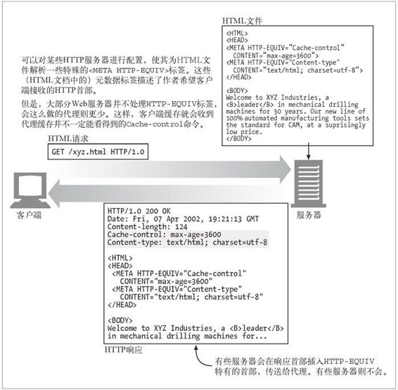

7.10 设置缓存控制
不同的 Web 服务器为 HTTP Cache-Control 和 Expiration 首部的设置提供了一些不同的机制。本节简要介绍了流行的 Apache Web 服务器是怎样支持缓存控制的。具体细节请参见你的 Web 服务器文档。
7.10.1 控制Apache的HTTP首部
Apache Web 服务器提供了几种设置 HTTP 缓存控制首部的机制。其中很多机制在默认情况下都没有启动——你要启动它们（有些情况下先要获取 Apache 的扩展模块）。下面是对某些 Apache 特性的简要描述。
mod_headers
通过 mod_headers 模块可以对单独的首部进行设置。装载了这个模块，就可以用设置单个 HTTP 首部的指令来扩充 Apache 的配置文件了。还可以将这些设置与 Apache 的常用表达式以及过滤器结合在一起使用，将这些首部与个别内容关联起来。这里有一个配置实例，这个例子将某目录下所有的 HTML 文件都标识为非缓存的：
<Files *.html>
Header set Cache-control no-cache
</Files>
mod_expires
mod_expires 模块提供的程序逻辑可以自动生成带有正确过期日期的 Expires 首部。通过这个模块，就可以将文档的过期日期设置为对其最后一次访问之后或者其最近修改日期之后的某一时间段。通过这个模块可以为不同的文件类型设置不同的过期日期，还可以使用便捷的详尽描述信息来描述其缓存能力，比如"access plus 1 month（自访问之后起1个月）“。这里有几个例子：
ExpiresDefault A3600
ExpiresDefault M86400
ExpiresDefault "access plus 1 week"
ExpiresByType text/html "modification plus 2 days 6 hours 12 minutes"
mod_cern_meta
通过 mod_cern_meta 模块可以将一个包含 HTTP 首部的文件与特定的对象联系起来。启动这个模块时，就创建了一组“元文件”，每个需要控制的文档一个，而且还会为每个元文件添加所期望的首部。
7.10.2 通过 HTTP-EQUIV 控制HTML缓存
HTTP 服务器响应首部用于回送文档的到期信息以及缓存控制信息。Web 服务器与配置文件进行交互，为所提供的文档分配正确的 Cache-Control 首部。
为了让作者在无需与 Web 服务器的配置文件进行交互的情况下，能够更容易地为所提供的 HTML 文档分配 HTTP 首部信息，HTML 2.0 定义了 <META HTTP-EQUIV> 标签。这个可选的标签位于 HTML 文档的顶部，定义了应该与文档有所关联的 HTTP 首部。这里有一个 <META HTTP-EQUIV> 标签设置的例子，它将 HTML 文档标记为非缓冲的：
<HTML>
<HEAD>
<TITLE>My Document</TITLE>
<META HTTP-EQUIV="Cache-control" CONTENT="no-cache">
</HEAD>
...
最初，HTTP-EQUIV 标签是给 Web 服务器使用的。如 HTML RFC 1866 所述，Web 服务器应该为 HTML 解析 <META HTTP-EQUIV> 标签，并将规定的首部插入 HTTP 响应中：
HTTP 服务器可以用此信息来处理文档。特别是，它可以在为请求此文档的报文所发送的响应中包含一个首部字段：首部名称是从 HTTP-EQUIV 属性值中获取的，首部值是从 CONTENT 属性值中获取的。
不幸的是，支持这个可选特性会增加服务器的额外负载，这些值也只是静态的，而且它只支持 HTML，不支持很多其他的文件类型，所以很少有 Web 服务器和代理支持此特性。
但是，有些浏览器确实会解析并在 HTML 内容中使用 HTTP-EQUIV 标签，像对待真的 HTTP 首部那样来处理嵌入式首部（参见图 7-17）。这样的效果并不好，因为支持 HTTP-EQUIV 标签的 HTML 浏览器使用的 Cache-control 规则可能会与拦截代理缓存所用的规则有所不同。这样会使缓存的过期处理行为发生混乱。

图 7-17 大多数软件都会忽略 HTTP-EQUIV 标签，所以这些标签可能会带来一些问题
总之，<META HTTP-EQUIV> 标签并不是控制文档缓存特性的好方法。通过配置正确的服务器发出 HTTP 首部，是传送文档缓存控制请求的唯一可靠方法。